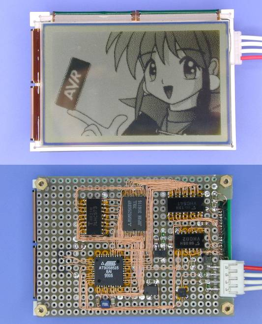

Some devices of the AVR family can expand data memory with external SRAM. They are suitable for applications which process large amount of data. However, AVR doesn't have DMA controller, it is difficlult to tranfer data between the data memory and the I/O device quickly. But adding a bit of glue logic enables fast data transferring unexpectedly. The method documented in this note will able to be applied to any other microcontrollers, such as i8051, which has the same problem.
The circuit diagram for pseudo DMA is very simple. Next image shows the circuit diagrams for DMA write and DMA read. When pseudo DMA is enabled, the RD/WR pulses from AVR is also used as strobe pulse for DMA device, the DMA device intrecepts the transferred data at the same time. This method is two times faster than data transferring via intrenal register. In this operation, AVR works as only an address generator, the data transferred between external bus and intrenal register is insignificant.
Circuit Diagrams for Pseudo DMA

Figure (a) shows the circuit diagram for DMA output. Enable strobe pulse for DMA device and read data to be transferred from extrenal memory, the data is also written into the DMA device at the same time. The enable signal can also be generated with left address bits when using a small memory.
Figure (b) shows the circuit diagram for DMA input. This also use WR pulse like DMA output, read data from DMA device will be written into extrenal memory instead of data from AVR. The data from AVR is insignificant ($FF is recommended), however, to avoid conflict between AVR and DMA device, Rs (approximately 1 kohms) or any bus switch must be inserted to data bus. The series resisters might decrease timing margin or noise immunity so that the value should be chosen with care. Because the WR pulse is too narrow, one wait state might be needed.
Therefore, I'm calling it DMA but it is driven by program, the tansfer mode must be burst mode transfer which transfers certain amount of data block at once, or the performance will be decreased conspicuously. Execution time of extrenal memory access with load/store instruction is three clock cycles minimum. This enables increase data transfer rate up to 2.66 MB/sec at 8 MHz.
Example of Pseudo DMA
;---------------------------------------------------;
; TC0 overflow ISR (10kHz)
tc0ov:
push r16 ;Save regs.
in r16, SREG ;
push r16 ;
push r17 ;
push YL ;
push YH ;/
outi TCNT0, -11 ;Restore TCNT0
ldsw Y, Vaddr ;Load DMA pointer
cbi PORTD, DMAEN ;Enable pseudo DMA
ldi r17, 40/10 ;Transfer 40 bytes of line data
ld r16, Y+ ;
ld r16, Y+ ;
ld r16, Y+ ;
ld r16, Y+ ;
ld r16, Y+ ;
ld r16, Y+ ;
ld r16, Y+ ;
ld r16, Y+ ;
ld r16, Y+ ;
ld r16, Y+ ;
dec r17 ;
brne PC-11 ;/
sbi PORTD, DMAEN ;Disable pseudo DMA
lds r16, Line ;Load line counter
tst r16 ;If top line, assert YD.
brne PC+2 ;
cbi PORTD, YD ;/
inc r16 ;Next line
cpi r16, 200 ;If bottom line, re-initialize
brcs PC+4 ; DMA pointer and line counter.
clr r16 ;
ldiw Y, Vram ;/
cbi PORTD, LP ;Strobe (LP) the line data.
sts Line, r16 ; Save DMA pointer and line ctr.
stsw Vaddr, Y ;
sbi PORTD, LP ;
sbi PORTD, YD ;/
pop YH ;Restore regs.
pop YL ;
pop r17 ;
pop r16 ;
out SREG, r16 ;
pop r16 ;/
reti
This is an example of using a graphic LCD module as an application of the pseudo DMA. The image at top of this page shows the built circuit board. The circuit diagram is here. There is difference between graphic LCD modules and character LCD modules. The graphic LCD modules grater than certain resolution doesn't have built-in frame buffer. To still any image to such graphic LCD modules, image data must be sent to the LCD module continually. This is the concept like refreshing CRT display.
The graphic LCD module used in this example is 320 by 200 dots, 2.7", B/W. Whole amount of pixel data of one frame is: 320 * 200 / 8 = 8000 bytes. Refresh rate for the LCD is 50 Hz, so that the required data transfer rate makes 400 kB/sec average.
The data tranfer is performed by horizontal line in constant interval, each horizontal image data must be sent to LCD with 100 µsec timer interrupt. The interrupt service routine is executed within 200 clock cycles, so that the load ratio of refresh operation running at 7.37 MHz is less than 30 percent. For 640 by 200 dots LCD, it will be 45 percent. It's very good performance! :-)
Of course when DMAEN is controlled with general I/O port, all interrupts should be disabled during pseudo DMA is being executed, otherwise interrupted read access to the external memory will send unexpected data to the LCD.
Now, the frame buffer is in local memory. This means, it can draw fast, and is easy to implement multiple plane, virturl frame buffer or any other features.

{kind=link}
{kind=link}